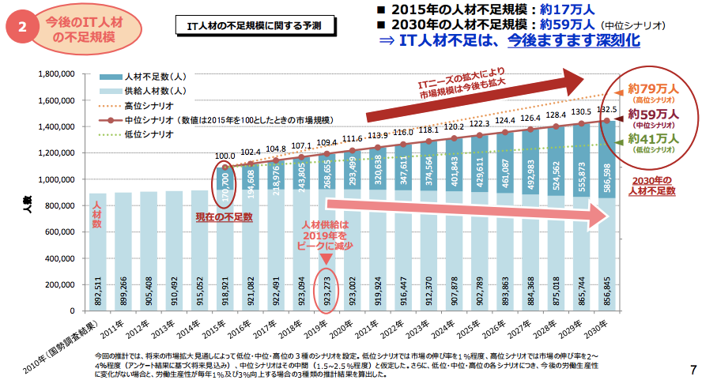

※ここでは普通科の高校生が学習する教科「情報」について説明しています。
【参考】高校「情報Ⅰ」で学習する内容
→6年生理科では人感センサを用いて条件分岐を使った学習などをしてくる。
→中学ではさらにプログラミングなどを用いた課題解決を学ばせたい。
→さらに大学共通テストにも教科「情報」が加わる
→高校「情報」での学習の基礎を中学で確実にしておく必要がある
→ここで履修漏れが発生すると、高校での学習に支障をきたす
※高校の情報Ⅰのプログラミング学習において、テキストプログラミングを用いて指導することが想定されています。
※中学段階では（Scratchのような）ビジュアルプログラミングである程度、自由にプログラムが作れる状態になっておくと良いでしょう。
小学校・中学校・高校、それぞれプログラミング教育について学習しました。
それぞれの成長段階に応じてが計画され、技術分野の指導内容についていろいろなところで公表されています。
教材研究を深めて、生徒の実態や指導者の力量に合わせた指導をしてください。

「IT人材の最新動向と将来推計に関する調査結果」（経済産業省）